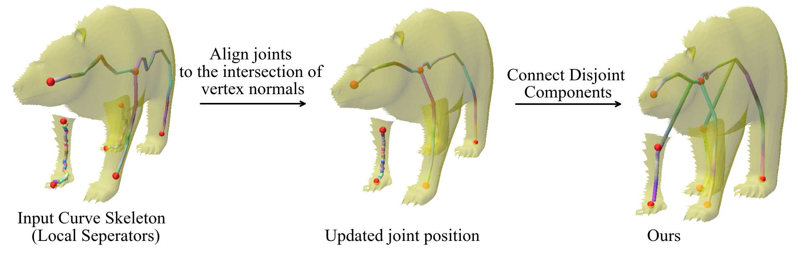

Curve skeleton
(i) Notice that the extracted joint position from Local separators lies on the surface of the incomplete mesh. Our optimization aligns the joint position to the medial axis of the object.
Animating a virtual character based on a real performance of an actor is a challenging task that currently requires expensive motion capture setups and additional effort by expert animators, rendering it accessible only to large production houses. The goal of our work is to democratize this task by developing a frugal alternative termed Transfer4D that uses only commodity depth sensors and further reduces animators' effort by automating the rigging and animation transfer process.
Our approach can transfer motion from an incomplete, single-view depth video to a semantically similar target mesh, unlike prior works that make a stricter assumption on the source to be noise-free and watertight.
(i) Notice that the extracted joint position from Local separators lies on the surface of the incomplete mesh. Our optimization aligns the joint position to the medial axis of the object.
(ii) To incorporate the motion information, each curve of the extracted curve skeleton is split into multiple bones
Our proposed skeletonization method, (a) does not require predifined template or markers, (b) works on single-view incomplete mesh sequence, and (c) uses the geometry and motion cues to estimate skeleton motion.
Static skeletonisation methods do not incorporate motion information and produce temporally incoherent skeletons
Compared to motion skeleton extracted from other methods, by incorporating structural cues, ours is more effective at embedding skeleton from incomplete mesh sequence.
@article{transfer4D,
author = {Maheshwari, Shubh and Narain, Rahul and Hebbalaguppe, Ramya},
title = {Transfer4D: A framework for frugal motion capture and deformation transfer},
journal = {CVPR},
year = {2023},
}